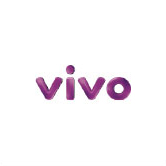

Possui as melhores dragas de sucção para desassoreamento de lagos, lagoas, rios, tanques e represas.
A Ambiental logística atua no mercado desde de 2007, oferece diversos tipos de serviços ambientais com foco em retirada e tratamento de resíduos contaminados
teste
